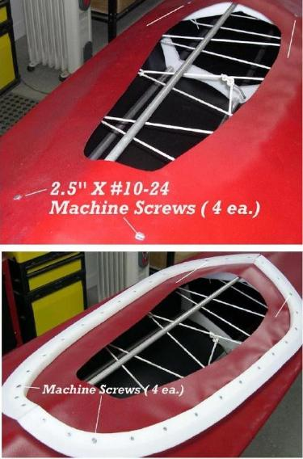

| Coaming Attachment (1 of 4) | Menu Last Page Next Page |
|  |
Split Coaming
1. The skin is attached to the coaming base plate with Velcro. The PVC inside the coaming is cut open to allow access to the hold down machine screws attaching the base plate to cross sections 3 and 4. (Symetrik). Remove the skin around the machine screws (4 ea.) to allow access.
2. Attach the coaming to the base plate with 4 machine screws. Once attached, trim the PVC to within 3 inches of the inside edge of the coaming. This material will fold around the base plate for Velcro attachment. |